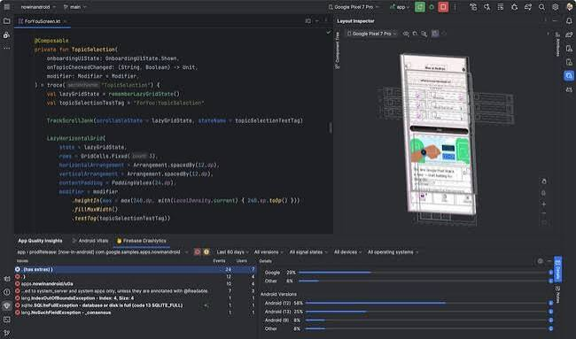
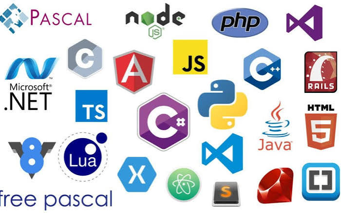

La programación de aplicaciones es el proceso de crear programas digitales que funcionan en celulares, computadoras y tabletas.
Estas aplicaciones se diseñan para facilitar diferentes actividades, como comunicarse, estudiar, trabajar, comprar y entretenerse.

Es una actividad que consiste en escribir códigos utilizando diferentes lenguajes de programación para crear aplicaciones que cumplan una función específica.
Los programadores utilizan herramientas tecnológicas para desarrollar aplicaciones útiles y fáciles de utilizar.

Para crear una aplicación se siguen varios pasos:
Planificación: se decide qué tipo de aplicación se quiere crear y para qué servirá.
Diseño: se eligen los colores, las imágenes, los botones, las letras y la organización de la pantalla.
Programación: se escribe el código que permite que la aplicación funcione.
Pruebas: se revisa que todas las funciones trabajen correctamente.
Publicación: se prepara la aplicación para que otras personas puedan descargarla y utilizarla.
El diseño de una aplicación es la apariencia que tiene y la manera en que las personas interactúan con ella.
Debe ser atractivo, ordenado y fácil de entender.
Algunos elementos importantes son:
Colores: ayudan a darle personalidad y estilo.
Botones: permiten realizar acciones.
Imágenes: hacen que la aplicación sea más atractiva.
Tipografía: es el tipo y tamaño de las letras.
Menús: ayudan a encontrar las diferentes opciones.
Iconos: representan funciones mediante pequeños dibujos.
Algunas herramientas populares son:
Android Studio: para desarrollar aplicaciones Android.
Flutter: para crear aplicaciones Android y iPhone.
Visual Studio Code: para escribir código.
Xcode: para desarrollar aplicaciones para iPhone.
La programación de aplicaciones es importante porque permite crear soluciones tecnológicas que facilitan la vida cotidiana.
También ayuda a mejorar la comunicación, la educación, los negocios y el entretenimiento.
| volver a inicio | anterior | siguiente |